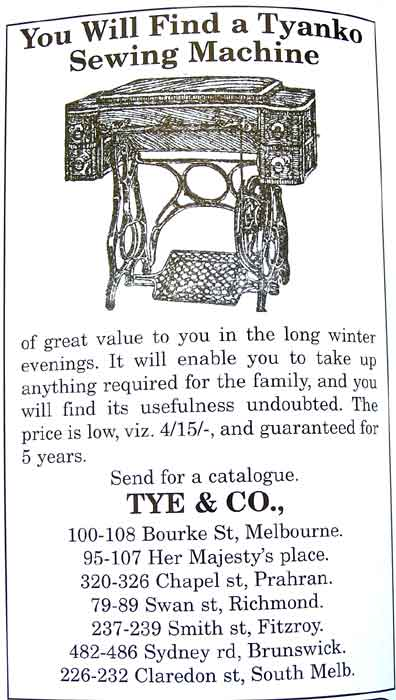

The NeedleBar
Tye & Company
Melbourne,
Victoria
(Information courtesy
of Bernadette Dewhurst-Phillips)
Tye and Company, based in Melbourne,
had branches at several locations as can be seen in the their advertisment below.
Their machines were badged 'TYANCO'

This page may not
be reproduced or distributed in part or in whole without the prior written permission
of the copyright owner